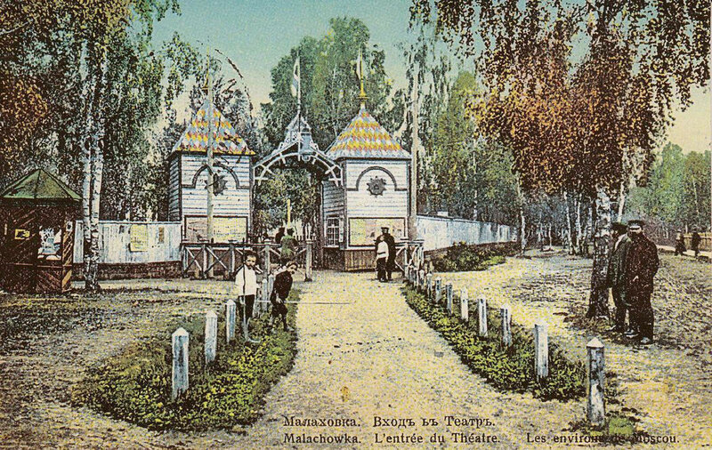
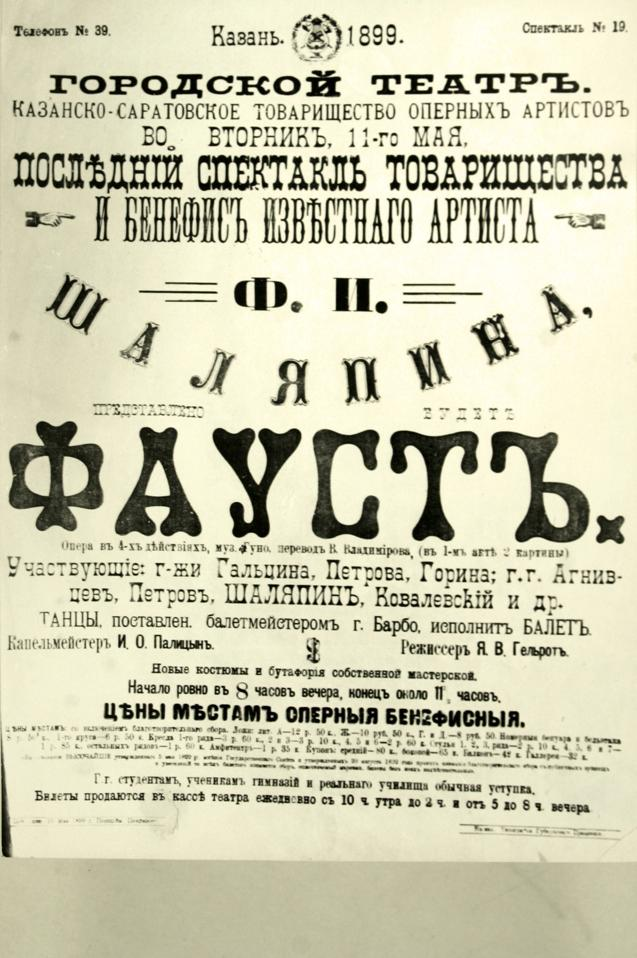
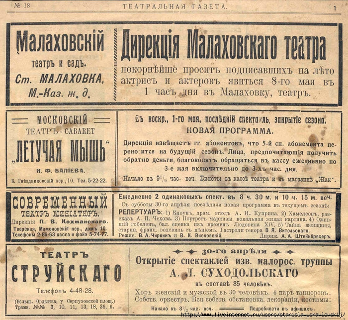
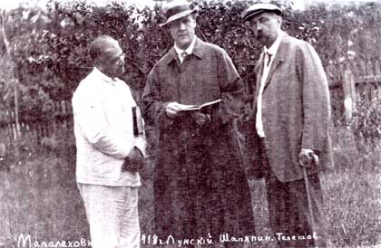

Летний театр
Гордостью подмосковного поселка Малаховка был Летний театр. Принадлежал он землевладельцу Павлу Алексеевичу Соколову, который был хорошо известен в Москве как любитель театрального искусства. В 1896 году в журнале «Театрал» появилась небольшая заметка, в которой упомянули кружок любителей. Они играли пьесы на открытой сцене в Малаховке. Их представления пользовались популярностью. Вскоре в Малаховском парке построили театр, но он сгорел в 1910 году. Меценат Павел Соколов в 1911 году построил новый театр на 500 мест, который назвали Летним. Всего за 52 дня новое здание театра на 500 зрительских мест построила артель рязанских плотников. Торопились к открытию театрального сезона 1911 года. При ремонте театра в 1966 г. был найден договор владельца театра П.А. Соколова с артелью плотников о сроках строительства. По рассказам очевидцев, автором рисунка фасада здания в греческом стиле был Ф.И. Шаляпин. Существует предание, что Федор Иванович, чтобы ускорить строительство культурного центра в дачном поселке, заключил с Соколовым пари на ведро шампанского. Певец проиграл, но достиг желаемого: к открытию сезона все было готово.
Театр возвели в стиле модерн. Он имел полукруглый фасад, который поддерживали шесть колонн. По сторонам расположились портики. К главному входу вела широкая лестница. Сцена была глубокой, а перед ней находился оркестр. В театре был партер, где проводились балы. Его окаймляли 12 театральных лож. Еще один интересный момент: Соколов специально построил электростанцию, которая питала Летний театр электричеством. По тем временам это было настоящей роскошью! Сцена глубокая, с высокими колосниками, по бокам сцены расположены 6 артистических уборных. Перед сценой помещение оркестра. Новый театр заметно отличался от сгоревшего, где на втором этаже располагалась уютная гостиница для актеров. При новом театре гостиницы не было, ее заменили комнаты в доме возле аптеки, где опоздавшие на последний поезд актеры могли переночевать. Летний театр в Малаховке быстро снискал любовь зрителей и стал очень популярным. Яркие, неординарные афиши буквально заставляли людей покупать билеты. Здесь показывали спектакли из репертуара знаменитых московских театров: Малого, Художественного, Корша, Незлобина и других. На сцене Летнего театра поставили почти все пьесы Александра Островского, также ставили Антона Чехова, Уильяма Шекспира и других великих драматургов. Всего в репертуаре значилось порядка 500 спектаклей – невероятная цифра для театра в глубинке!
На спектакли в Малаховку съезжалась публика со всей Казанской дороги. Зрителям сообщали расписание отправлений и даже остановки поездов, доставляющих их к началу спектакля, и время отправления последних поездов, отбывающих в сторону Москвы и в сторону Раменского, время и номера дополнительных поездов и что к окончанию спектакля к театру подаются вагоны конного трамвая. Для каждой постановки писались декорации. Ряд декораций был написан по эскизам главного художника императорских театров К.А. Коровина. В журнале «Рампа и жизнь» в 1911-18 гг. Печатали объявления о проведении спектаклей. Журнал даже ввёл специальную рубрику – «Малаховский театр». Театр давал большие сборы. Можно с уверенностью сказать, что редкий губернский город имел такой театр. Но спектакли – это еще не все. Превосходная акустика Летнего театра привлекала любителей оперы. Здесь давали концерты Леонид Собинов, Антонина Нежданова, Александр Вертинский. Разумеется, Федор Шаляпин не мог пройти мимо театра, строителям которого он проспорил шампанское. Он любил тут выступать.
Также здесь танцевала прима-балерина Большого театра Екатерина Гельцер. Кроме того, ходят слухи, что Малаховскую сцену покорила возлюбленная Сергея Есенина Айседора Дункан. Увы, триумф Малаховского летнего театра длился недолго. После октябрьского переворота его творческий импульс угасал постепенно, а во второй половине ХХ века уже ничто не напоминало о его прошлой славе. Уникальное здание использовали как кинозал, сценическое оборудование и механизмы сломали, оркестровую яму заколотили. Летний театр просуществовал в Малаховском парке 90 лет. Жители обожали его и обязательно показывали всем гостям местную достопримечательность. В горбачевскую перестройку группа местных энтузиастов попыталась реанимировать ветшающую реликвию. Для начала на фасаде установили мемориальную доску с напоминанием: памятник Серебряного века охраняется законом.
Но 8 октября 1999 года знаменитый театр, как и его менее известный предшественник, сгорел. От театра остался только фундамент. Но и его хватило, чтобы весь Малаховский парк площадью свыше четырех гектаров внесли в список объектов культурного наследия Московской области. В 2005 году на страницах «Люберецкой газеты» в статье «Летний театр должен быть построен!» появилось обращение к руководству Люберецкого района и поселка Малаховка с просьбой сообщить, что предпринимается в отношении возрождения Малаховского Летнего театра. Тогда в районе проходили выборы, и появилась надежда на решение этой проблемы. Однако восстановление театра даже не началось. Ответа на статью не последовало. Жители Малаховки в 2017 году написали письмо в Общественную палату Московской области с просьбой помочь, и ее члены провели выездное совещание в Малаховском парке. В 2018 году планировалось начать проектирование в рамках сохранения объекта. Однако жители не понимают, что там сохранять, – театр надо восстанавливать фактически с нуля.